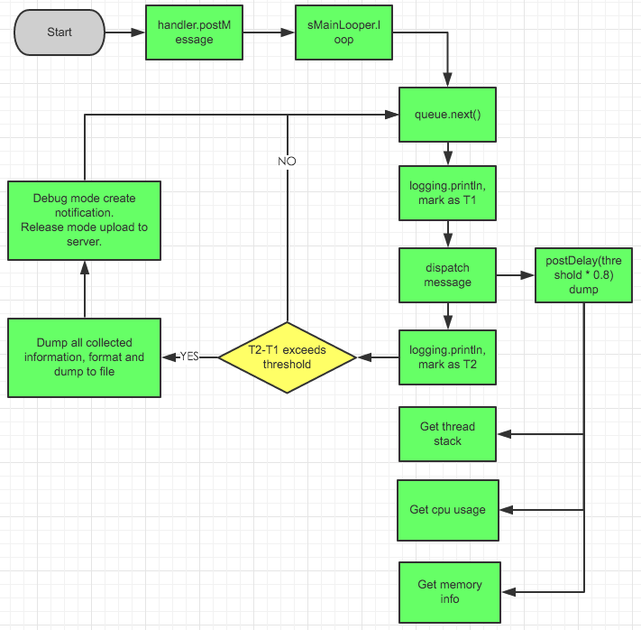

卡顿检测工具分析
检测卡顿有很多方法，开发测试期间，一个比较直观的办法是引入BlockCannary。
这个库是国内开发者开发的，下面是一个简单的介绍信息：
> BlockCanary是一个Android平台的一个非侵入式的性能监控组件，应用只需要实现一个抽象类，提供一些该组件需要的上下文环境，就可以在平时使用应用的时候检测主线程上的各种卡慢问题，并通过组件提供的各种信息分析出原因并进行修复。 取名为BlockCanary则是为了向LeakCanary致敬，顺便本库的UI部分是从LeakCanary改来的，之后可能会做一些调整。
使用
使用比较简单，不详细介绍，可以直接看使用说明: https://github.com/markzhai/AndroidPerformanceMonitor/blob/master/README_CN.md。
public class DemoApplication extends Application {
@Override
public void onCreate() {
// 在主进程初始化调用哈
BlockCanary.install(this, new AppBlockCanaryContext()).start();
}
}
其中AppBlockCanaryContext是开发者实现的配置项。
原理
BlockCanary的技术原理也比较简单，是利用的系统Framework层中Looper每次分发消息时会打印相应的日志，因此通过设置一个日志打印实现类Printer便可以实现对消息分发时间差的监控。
我们来看一下Looper相关的日志打印代码：
/**
* Run the message queue in this thread. Be sure to call
* {@link #quit()} to end the loop.
*/
public static void loop() {
// ...
for (;;) {
Message msg = queue.next(); // might block
if (msg == null) {
// No message indicates that the message queue is quitting.
return;
}
// This must be in a local variable, in case a UI event sets the logger
final Printer logging = me.mLogging;
if (logging != null) {
logging.println(">>>>> Dispatching to " + msg.target + " " +
msg.callback + ": " + msg.what);
}
final long slowDispatchThresholdMs = me.mSlowDispatchThresholdMs;
final long traceTag = me.mTraceTag;
if (traceTag != 0 && Trace.isTagEnabled(traceTag)) {
Trace.traceBegin(traceTag, msg.target.getTraceName(msg));
}
final long start = (slowDispatchThresholdMs == 0) ? 0 : SystemClock.uptimeMillis();
final long end;
try {
msg.target.dispatchMessage(msg);
end = (slowDispatchThresholdMs == 0) ? 0 : SystemClock.uptimeMillis();
} finally {
if (traceTag != 0) {
Trace.traceEnd(traceTag);
}
}
if (slowDispatchThresholdMs > 0) {
final long time = end - start;
if (time > slowDispatchThresholdMs) {
Slog.w(TAG, "Dispatch took " + time + "ms on "
+ Thread.currentThread().getName() + ", h=" +
msg.target + " cb=" + msg.callback + " msg=" + msg.what);
}
}
if (logging != null) {
logging.println("<<<<< Finished to " + msg.target + " " + msg.callback);
}
// ...
msg.recycleUnchecked();
}
}
可以看到系统本身在这里也会计算一个消息分发的时间差，如果大于slowDispatchThresholdMs，那么会输出一个日志。同时在Dispatch前后，都会通过Trace来记录，因此通过系统SDK提供的工具也可以检测消息处理的耗时情况。
为了实现监控消息分发处理的时间差，现在只需要向Looper设置一个Printer即可，设置接口如下。
/**
* Control logging of messages as they are processed by this Looper. If
* enabled, a log message will be written to <var>printer</var>
* at the beginning and ending of each message dispatch, identifying the
* target Handler and message contents.
*
* @param printer A Printer object that will receive log messages, or
* null to disable message logging.
*/
public void setMessageLogging(@Nullable Printer printer) {
mLogging = printer;
}
在BlockCanary中，计算时间差的代码如下：
@Override
public void println(String x) {
if (!mStartedPrinting) {
mStartTimeMillis = System.currentTimeMillis();
mStartThreadTimeMillis = SystemClock.currentThreadTimeMillis();
mStartedPrinting = true;
} else {
final long endTime = System.currentTimeMillis();
mStartedPrinting = false;
if (isBlock(endTime)) {
notifyBlockEvent(endTime);
}
}
}
private boolean isBlock(long endTime) {
return endTime - mStartTimeMillis > mBlockThresholdMillis;
}
实现的技术点基本就是这样，完整的流程，可以看下这张示意图:
